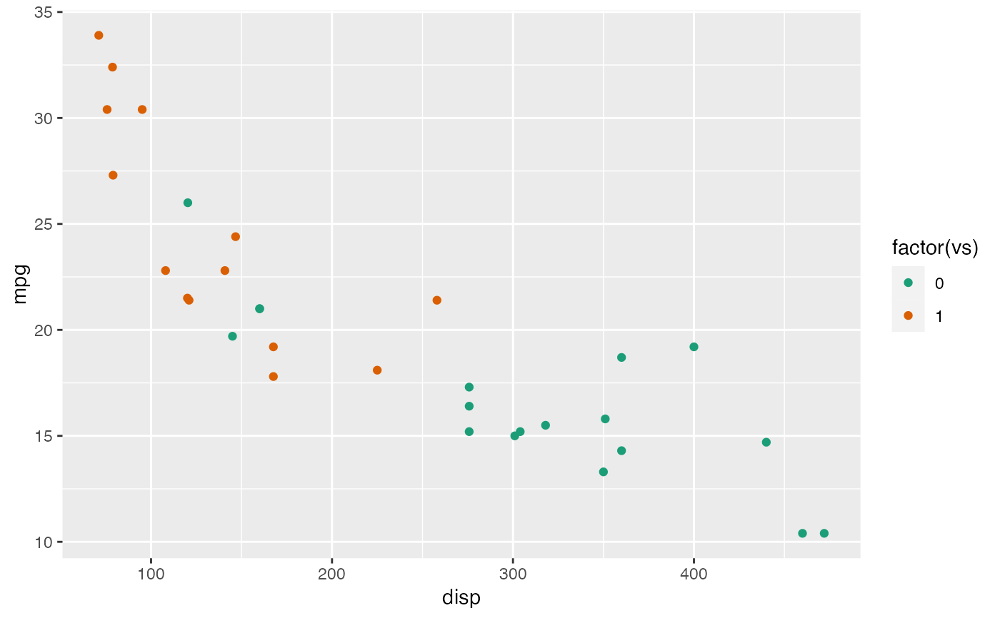
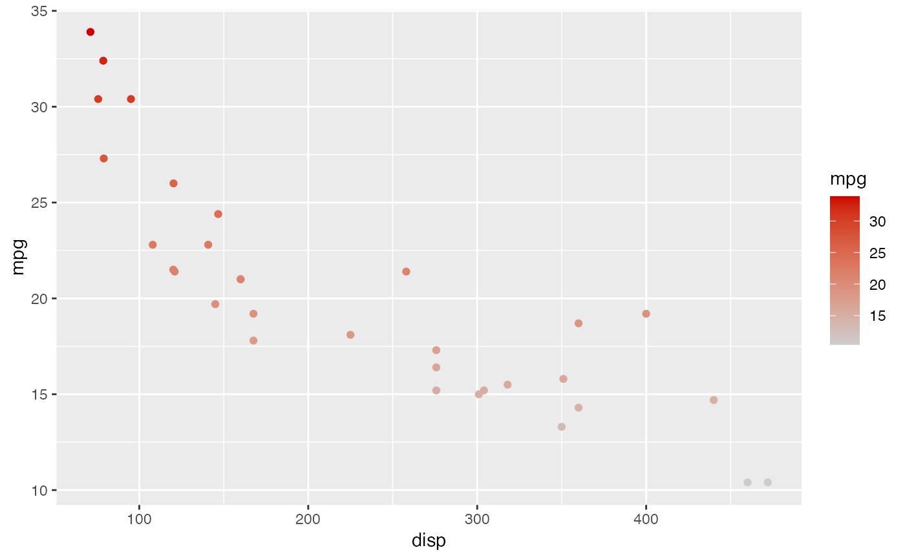
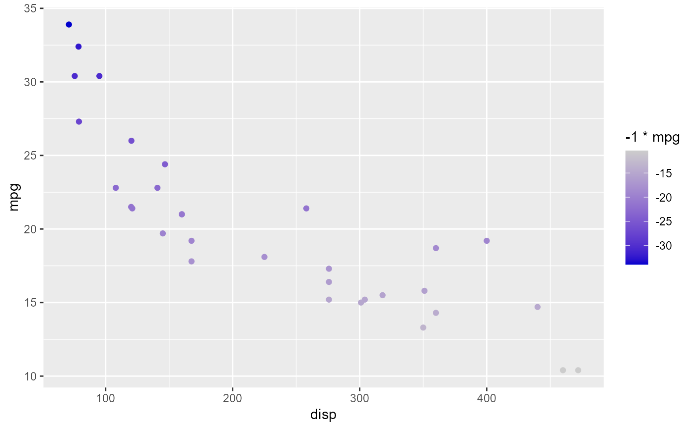
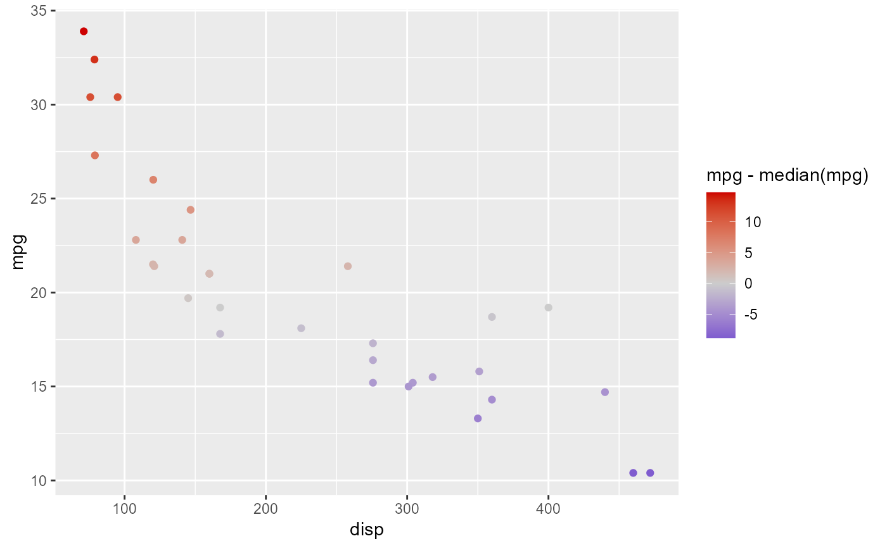
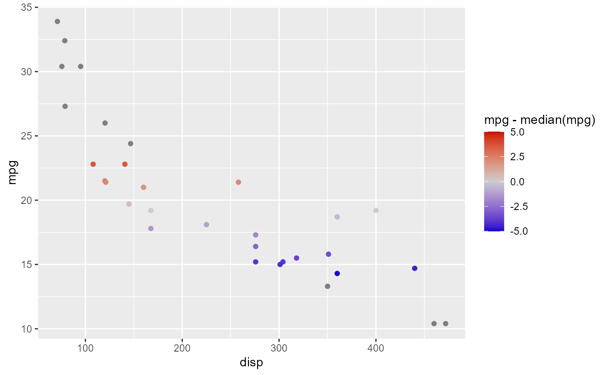

Whether or not a vector is a diverges a value, returns a logical. Used to help default a scale_color for ggplot2.
color_scale_of(x, mid_pt = 0, limits = NULL, ...)A vector to to scale the color to.
A single number checking divergence from. Defaults to 0.
A vector of the min and max values for the scale. Useful for setting an absolute range, such as (-1, 1) for attribution/y correlation of each point. Points outside of limits show as default grey. Defaults to NULL; the range of x.
Optional other arguments passed to ggplot2::continuous_scale or ggplot2::discrete_scale.
A list containing a scale_color, and scale_fill; the suggested color/fill scale for a ggplot.
Other cheem utility:
as_logical_index(),
contains_nonnumeric(),
is_discrete(),
is_diverging(),
linear_tform(),
logistic_tform(),
problem_type(),
rnorm_from(),
sug_basis(),
sug_manip_var()
library(cheem)
library(ggplot2)
g <- ggplot(mtcars, aes(disp, mpg))
## Discrete
g + geom_point(aes(color = factor(vs))) +
color_scale_of(mtcars$vs)

## Sequential increasing
g + geom_point(aes(color = mpg)) +
color_scale_of(mtcars$mpg)

## Dummy sequential decr
g + geom_point(aes(color = -1 *mpg)) +
color_scale_of(-1 * mtcars$mpg)

## Dummy diverging
g + geom_point(aes(color = mpg - median(mpg))) +
color_scale_of(mtcars$mpg - median(mtcars$mpg))

## Dummy limits
g + geom_point(aes(color = mpg - median(mpg))) +
color_scale_of(mtcars$mpg - median(mtcars$mpg), limits = c(-5, 5))
